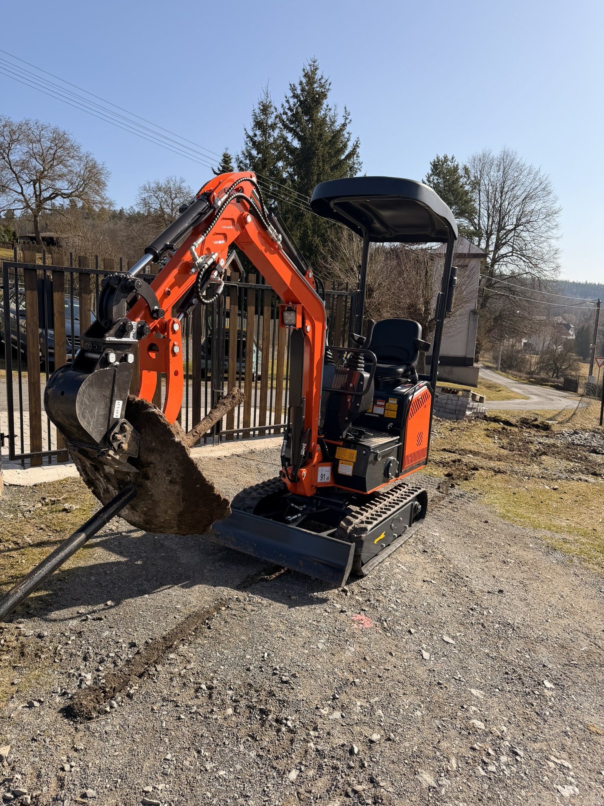

Minibagr Easy E10 Pro
Kompaktní stroj o hmotnosti 930 kg pro zahrady, přípojky, odvodnění, ploty i jemnější zemní práce kolem domu.
Hloubka kopání přibližně 1650 mm
Šířka pouze 920 mm pro průjezd do stísněných míst
Motor Koop KD192 a výkon 7,6 kW
Vhodný pro menší stavební a zahradní projekty
Hmotnost930 kg
MotorKoop KD192
Výkon7,6 kW
Max. výška kopání2590 mm
Pracovní tlak16 MPa
Lžíce 20 cm zdarma
Lžíce 40 cm zdarma
Svahová lžíce 80 cm
Rýpací trn
Hrabě